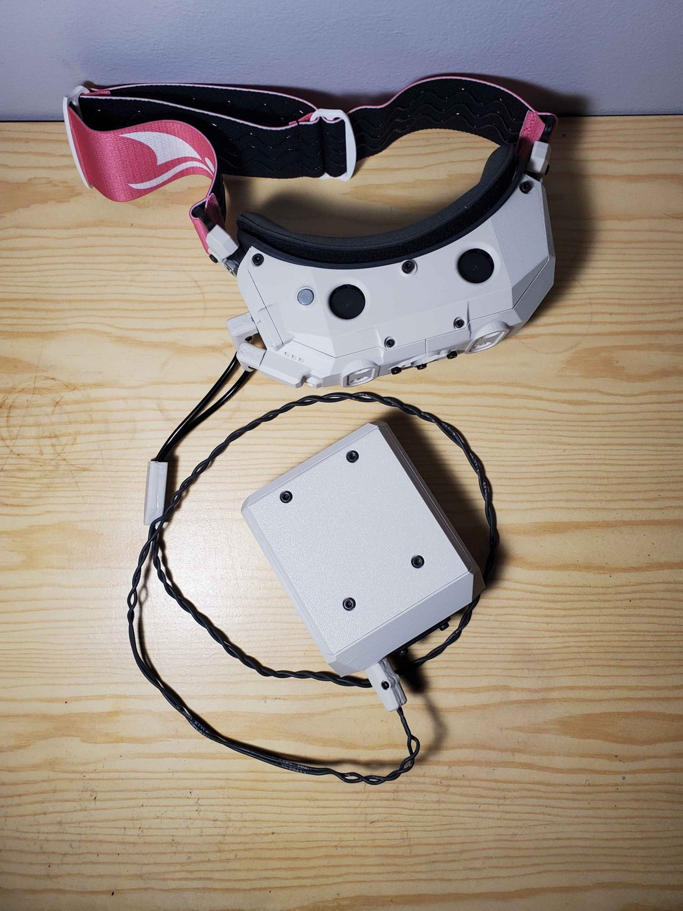
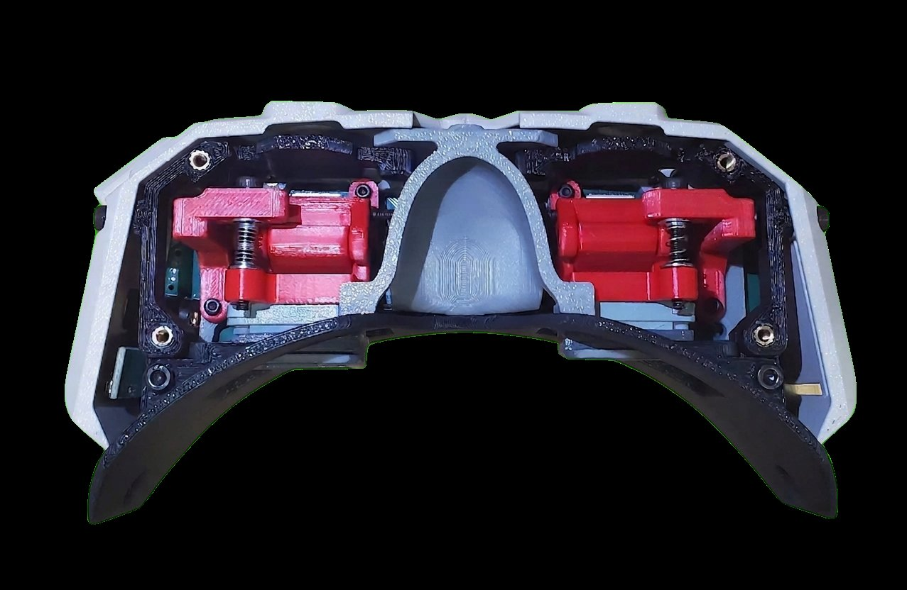
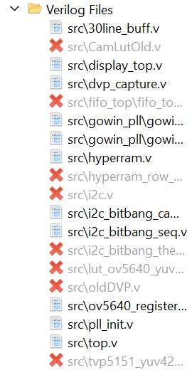
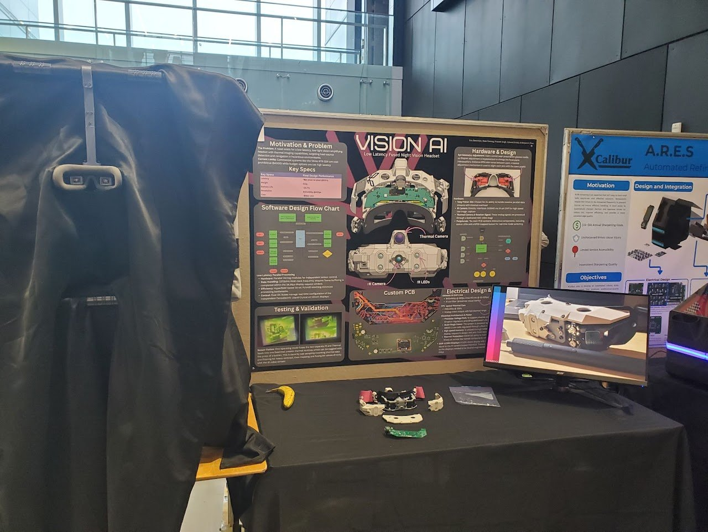
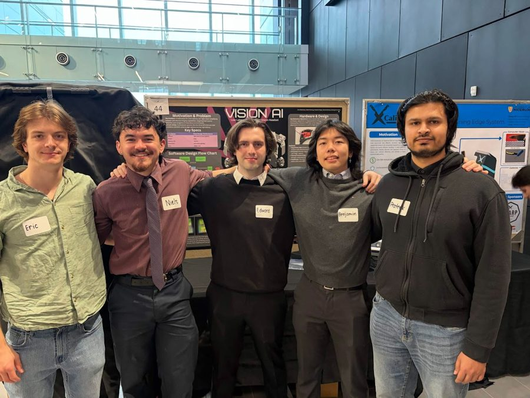

case 01 · Capstone · MTE 481
Vision AI — IR night vision headset
A head-mounted, low-latency IR night-vision system — built with a capstone team and branded Vision AI. My half was the FPGA video pipeline, camera capture through to display output, all in Verilog.

What it does
Vision AI takes an OV5640 CMOS camera under IR illumination, runs the video through an FPGA pipeline, and drives a pair of FLCOS micro-displays — one per eye — at 60 Hz. No host processor in the loop, no full frame buffer, so latency stays in the sub-frame range.

My role
I wrote the FPGA firmware in Verilog and synthesized it in Gowin EDA, targeting a Sipeed Tang Primer 25K. What's in the final build, end-to-end: DVP capture from the OV5640, a bit-banged I²C sequencer that brings up both the camera and the display panels against their register sets, a 30-line buffer on the display path, PLL clock-domain plumbing, and the top-level that wires it all together. My capstone team handled the PCB and the undocumented FLCOS display panels.

What was hard
Three pieces of scope didn't make the final build. A thermal overlay — the thermal sensor wouldn't initialize reliably over I²C. An analog FPV input — the TVP5151 decoder had timing and colorspace issues we couldn't crack in time. And HyperRAM as a full frame buffer — we got it talking, but the data comes back corrupted somewhere in the path, so it sits in the tree but isn't wired into the final pipeline yet.
On the parts that did ship, I rewrote the DVP capture twice and swapped the
I²C controller from a proper FSM to a bit-bang sequencer before the camera
came up cleanly. FPGA debug isn't kind — no printf, no stack
trace, a timing violation just shows up as a glitchy display, so you debug
by staring at a waveform.
Debugging
A few techniques and war stories from the software side, since FPGA debug doesn't give you a stack trace — when something's wrong, the display goes black or glitchy and you have to work it out from the outside in.
LED breadcrumbs in top.v
When the board flashed cleanly but produced nothing on the displays, the
first move was to assert an LED early in top.v and walk the
assertion down the pipeline. If the LED lit before the I²C bring-up block
but stayed dark after, I knew the FSM was stalling in there. One bit of
state I could see from across the room replaced a stack trace I couldn't
have.
OV5640 bring-up — hours in the register map
The camera needed a long sequence of register writes over I²C/SCCB before
it would output anything sane. I started with a generic
i2c_master.v module, but it was clumsier to debug than it was
worth, so I rewrote it as i2c_bitbang_cam.v — a dedicated
bit-banged sequencer specific to the OV5640 startup script. The
non-obvious registers that took the longest to dial in:
0x3037— PLL pre-divider0x3036— PLL multiplier (these two together set the pixel clock)0x380c/0x380d— HTS high/low (horizontal line length)0x380e/0x380f— VTS high/low (vertical frame length)0x3820/0x3821— video flip and mirror, needed to get the image right-side up for the displays
One-LED proof for the DVP capture path
Once dvp_capture.v was packing the camera's 8-bit Y/U/Y/V
stream into 16-bit YUV422 words for the display, I tied its
de_o data-valid output to an LED. If the LED blinked, three
things were true simultaneously: the I²C bring-up had succeeded, the
camera was streaming valid pixel data, and the capture module was packaging
it correctly. One signal collapsed three unknowns.
The saw-tooth on PCLK
Camera and display kept drifting out of sync. Probing the OV5640's PCLK pin showed it running near 115 MHz with a sharp saw-tooth waveform — peaks at 2.7 V, dropping ~1.4 V on every cycle. Bad enough on paper that rising edges should have been ambiguous, but the FPGA was interpreting it correctly anyway. Root cause: no source-termination on the trace. The run was under 1 cm so length wasn't the issue, but a high-impedance FPGA input was reflecting energy back with no resistor in the way. A 33–77 Ω series resistor on PCLK went on the v2 fix list.
The GOWIN FIFO IP turned out to be the bug
The displays were strobing because the camera was writing into a GOWIN
FIFO IP faster than the display side could read, and the FIFO wasn't
handling the overrun the way the docs claimed. To localize the
corruption I injected a checkered test pattern further and further up
the pipeline. When the pattern made it cleanly through everything
except the FIFO, the IP itself became the suspect — and the
same behaviour reproduced whether I targeted LUTs or BSRAM. I replaced
it with a hand-rolled 32line_buff.v in BSRAM (32 lines × 480
pixels × 16-bit), which gave the display enough slack to read ahead of
the camera writes without ever colliding.
PD-controlled frame sync
Even with the buffer, the displays strobed lightly when the camera and display frame rates drifted apart. I timed each frame's vsync edges and ran a PD loop that adjusted the display's blanking-bit count on the fly to lock display frame to camera frame. Strobing went away.
HyperRAM — the one I couldn't crack
HyperRAM was supposed to be the full frame buffer — enough bandwidth at 100 MHz to hold ~26 frames at 60 fps. Two Gowin synthesis errors held up most of the work:
-
CK0021— anIDDRprimitive reading the hidden_dnet of aninoutport while anODDRdrove the same pad. Both are needed for the bidirectional DQ bus (DDR out for CA bytes and write data, DDR in for read data strobed byRWDS), so I couldn't just drop one. -
CK0011— anODDRprimitive must drive a pad directly, with no intervening logic. My first cut had registered logic between theODDRand the pin.
I tried wrapping the DDR primitives in a sub-module to isolate them from the register logic, but Gowin flattens hierarchy during place-and-route, so the wrapper bought nothing. Rewriting the module from scratch with only default register primitives finally got it to compile. Then probing the HyperRAM clock at 100 MHz showed clean edges, low jitter, the right duty cycle — and the data coming back through the pipeline was still corrupted. The board had no test points on the bus, so a logic analyzer couldn't see anything between FPGA and RAM. The failure could have been configuration registers off by a value, latency setting off by a cycle, wrong drive strength, a bad solder joint, or a protocol bug I never found. Time ran out before any of those could be ruled in or out, and the 32-line buffer carried the final build instead.
- Platform
- Sipeed Tang Primer 25K (Gowin GW5A FPGA)
- Toolchain
- Gowin EDA
- HDL
- Verilog
- Camera
- OV5640 over DVP, I²C-configured
- Display
- 2× FLCOS micro-displays @ 60 Hz, I²C-configured
- Buffering
- 30-line on-chip buffer (HyperRAM WIP)

